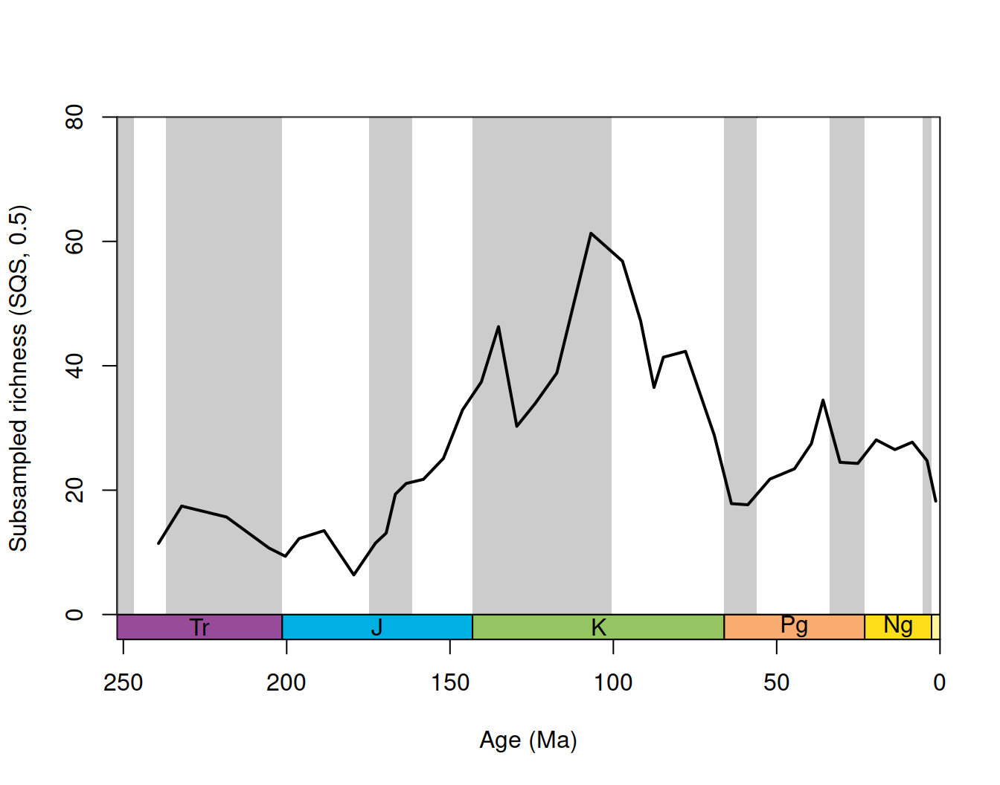

install.packages("chronosphere")Basic diversity dynamics of scleractinian corals with divDyn
A basic introduction to the divDyn package
extinction
origination
No matching items
Goals and introduction
The purpose of this vignette is to guide new users through data acquisition and analysis, as well as to demonstrate the basic capabilities of the divDyn R (Kocsis et al. 2019) package. This tutorial will use Scleractininan corals as an example group which was selected selected because the due to data quality reasons and as we have readily available additional information about the coral taxa with which to customize the analyses.
Occurrence data download
To run analyses, first the occurrence data have to be downloaded and processed. You can download all PBDB occurrences using the chronosphere R package. The chronosphere is an initiative we have started at GeoZentrum Nordbayern in Erlangen, to facilitate the use, tracability, portability and version controlling of data in scientific analyses.
The package is available from the CRAN repositories and can be installed with the following line of code (you will probably have to select your preferred download mirror).
After the package is installed, it is ready for use, you can attach it with:
library(chronosphere)Loading required package: rasterLoading required package: spdat <- fetch("pbdb", ver="20220510")If you use the data in publications, please cite its
reference(s), as well as that of the 'chronosphere' package.Please remember to acknowledge the Paleobiology Database (http://paleobiodb.org) in your publication.This is a pre-processed version of the PBDB that was downloaded with this API call:
attributes(dat)$chronosphere$API[1] "https://paleobiodb.org/data1.2/occs/list.csv?datainfo&rowcount&interval=Ediacaran,Holocene&show=class,classext,genus,subgenus,coll,coords,loc,paleoloc,strat,stratext,lith,env,ref,crmod,timebins,timecompare,refattr,entname,attr,ident,img,plant,abund,ecospace,taphonomy,etbasis,pres,prot,lithext,geo,methods,resgroup,refattr,ent"You can copy and paste this URL to your browser and the PBDB would compile the current corresponding dataset for you. It normally takes about 15-30 minutes to get the dataset, another couple of minutes to download the .csv, which you still have to read in using read.table().
The PBDB API allows much more flexible download, but this denormalized version of the PBDB is enough for the overwhelming majority of the analyses. There are some cases, when the data you are interested in are not in this subset and you have to use the API yourself.
Data processing
Installing and loading divDyn
To process the stratigraphic information in the downloaded occurrence file, and do the analyses, you have to to install and attach the divDyn package.
The package is available from the CRAN repositories and can be installed with the following line of code (you will probably have to select your preferred download mirror).
install.packages("divDyn")After the package is installed, it is ready for use, you can attach it with:
library(divDyn)v0.8.2. See latest changes with 'news(package="divDyn")'. Default:
Time flows forward with 'bin', and backward with 'age' and 'slice()'.
Attaching package: 'divDyn'The following object is masked from 'package:chronosphere':
matchtimeInitial filtering
The downloaded dataset needs to be subsetted to represent the order of scleractinian corals.
dat <- dat[dat$order=="Scleractinia",]The analyses will be conducted at the level of genera.
The entries that have no valid genus names in the PaleoDB can be omitted at this stage. They will not provide us any information about the evolution of the group.
# omit non-genus entries
dat<- dat[!dat$genus=="", ]The dataset should be cleaned as much as possible at this stage, for didactic purposes and for keeping things simple, this step is skipped in this tutorial.
Stratigraphic resolution
Every colleciton in the the PaleoDB has a user entered 'early_interval' and 'late_interval' field. These are fields are used to place the collection in stratigraphy/geological time. The 'early_interval' collection is mandatory for every entry while the 'late_interval' is only necessary if the taxon does not fit in the interval specified as 'early_interval'. Otherwise the 'late_interval' field is blank (empty quotes: "").
The divDyn package uses two frequently used, discrete time scales that we use as the finest stratiigraphic resolution of our analyses: the stage level time scale (stages, 95 bins) and the ten million year time scale (tens, 49 bins). These can be attached with the data() function:
data(stages)
data(tens)These will be useful for plotting as they contain the age estimates for the intervals, but they are not too useful for finding which interval the 'early_interval' and 'late_interval' fields point to. This can be found in the keys object.
data(keys)This list is designed to be used with the categorize() function of the package, that combines the large number of entries to and replaces them with the name of the group they belong to. This has to be run on both the 'early_interval' and the 'late_interval' fields.
# the 'stg' entries (lookup)
stgMin <- categorize(dat[ ,"early_interval"], keys$stgInt)
stgMax <- categorize(dat[ ,"late_interval"], keys$stgInt)The output of this function is either an interval number that corresponds to the stages timescale, -1, indicating that the value was empty quotes, or NA, if the interval is either not in the lookup table or is too broad.
Because this scheme is designed for general use, the output of this function is a vector of character values. These have to be demoted to numeric values, otherwise their order would not be correct.
# convert to numeric
stgMin <- as.numeric(stgMin)
stgMax <- as.numeric(stgMax)Now these two vectors have to be combined. There are more solutions to solve the problem of stratigraphic uncertainty, but for the sake of simplicity, let’s just omit every occurrence that cannot be assigned to a single stage in the stages timescale. For that, we will create an empty container, check whether an the interval entry for the occurrence satisfies the condition above, and if so, save the interval ID.
# empty container
dat$stg <- rep(NA, nrow(dat))
# select entries, where
stgCondition <- c(
# the early and late interval fields indicate the same stg
which(stgMax==stgMin),
# or the late_intervar field is empty
which(stgMax==-1))
# in these entries, use the stg indicated by the early_interval
dat$stg[stgCondition] <- stgMin[stgCondition] Now every occurrence entry either has a single integer number in the stg column, or NA as its interval identifier. Note that the code above cannot be used for Cambrian and Ordovician occurrences due to stratigraphic problems. If you are interested in assigning these to stage-level intervals, we recommend to take a look at the vignette we wrote that describes global marine, Phanerozoic scale analyses:
https://github.com/divDyn/ddPhanero/blob/master/doc/1.0.1/dd_phanero.pdfThe assignments can be repeated for the 10-million year bins with the following commands:
# a. categorize interval names to bin numbers
# categorize is the new function of the package
binMin<-categorize(dat[,"early_interval"],keys$binInt)
binMax<-categorize(dat[,"late_interval"],keys$binInt)
# convert to numeric
binMin<-as.numeric(binMin)
binMax<-as.numeric(binMax)
# b. resolve max-min interval uncertainty
# final variable (empty)
dat$bin <- rep(NA, nrow(dat))
# use entries, where
binCondition <- c(
# the early and late interval fields indicate the same bin
which(binMax==binMin),
# or the late_interval field is empty
which(binMax==-1))
# in these entries, use the bin indicated by the early_interval
dat$bin[binCondition] <- binMin[binCondition]Sampling assessment
You can assess how well the stratigraphic resolution turned out by running the table() function on the interval-identifier vector:
table(dat$stg)
49 54 55 56 57 58 59 60 61 62 63 64 65 66 67 68
5 114 72 446 910 600 101 86 220 80 87 491 383 231 1953 1149
69 70 71 72 73 74 75 76 77 78 79 80 81 82 83 84
988 157 288 207 483 1025 389 529 124 71 158 294 745 377 311 235
85 86 87 88 89 90 91 92 93 94 95
225 458 656 519 1127 1818 1184 1463 1903 7825 1201 Summing it tells us how many of the overall occurrences we can assign to stratigraphic stages.
sum(table(dat$stg))[1] 31688# which is a
sum(table(dat$stg))/nrow(dat)[1] 0.8528826# proportion of the total data.As we cannot use unresolved occurrences in any way, coding will be easier if we omit them at this stage.
# omit unbinned
dats <- dat[!is.na(dat$stg),]If you take a look at the stage object, you can notice that besides the few entries in stages 37, 49 and 50, Scleractinian become important fossils in the Anisian stage.
# omit Paleozoic
dats <- dats[dats$stg>52,]You can get a more organized view of sampling parameters by running the binstat() function in divDyn, that calculates the occurrence, collection, and reference counts in a single line. This is the general use of the high-level function of the package: you state the occurrence data.frame as the first, and then the column names as additional arguments. The column tax stands for the taxon names, bin for the discrete time bins, coll for collection identifiers and ref for reference identifiers.
bsFull <- binstat(dats, tax="genus", bin="stg",
coll="collection_no", ref="reference_no")The database contains duplicate occurrences (multiple species/genus).bsFull$occs [1] NA NA NA NA NA NA NA NA NA NA NA NA NA NA NA
[16] NA NA NA NA NA NA NA NA NA NA NA NA NA NA NA
[31] NA NA NA NA NA NA NA NA NA NA NA NA NA NA NA
[46] NA NA NA NA NA NA NA NA 114 72 446 910 600 101 86
[61] 220 80 87 491 383 231 1953 1149 988 157 288 207 483 1025 389
[76] 529 124 71 158 294 745 377 311 235 225 458 656 519 1127 1818
[91] 1184 1463 1903 7825 1201This output is organizes so that the index of the values in the vector match up the bin identifier (e.g. 60th value is for stg 60). The default setting of the function will output a message about duplicate occurrences. This warns us that there are collections with more than one genus entries in a collection (i.e. more than one species/genus). If you are interested in genus-level analyses, it is probably better to count these as one, which you can do with duplicates=FALSE option.
bs <- binstat(dats, tax="genus", bin="stg",
coll="collection_no", ref="reference_no", duplicates=FALSE)
bs$occs [1] NA NA NA NA NA NA NA NA NA NA NA NA NA NA NA
[16] NA NA NA NA NA NA NA NA NA NA NA NA NA NA NA
[31] NA NA NA NA NA NA NA NA NA NA NA NA NA NA NA
[46] NA NA NA NA NA NA NA NA 99 66 355 769 442 77 72
[61] 201 77 74 411 291 206 1663 906 701 126 243 190 387 824 348
[76] 448 115 63 146 224 632 341 271 217 192 407 508 410 908 1207
[91] 954 1117 1474 6154 972Plotting
Plotting these variables is probably better then just looking at the numbers. The package includes a powerful time-scale plotting function that lets you visualize the how time is broken down to discrete intervals. This highly-customizable function is built on the basic plot() function, and most of its arguments are inherited. The following function call will draw plot with in the past 250 million years, with series-level shading and system-level boxes at the bottom:
tsplot(stages, boxes="sys", boxes.col="systemCol",
shading="series", xlim=c(250, 0), ylim=c(0,2000))The you can draw the number of occurrences with lines(). As the same row indices in the stages object and the result of binstat() indicate values that belong to the same interval, you do not need any subsetting to align the to data.frames.
tsplot(stages, boxes="sys", boxes.col="systemCol",
shading="series", xlim=c(250, 0), ylim=c(0,2000), ylab="Number occurrences")
lines(stages$mid, bs$occs)We will mostly use the same basic function call for plotting, and typing all these arguments is time consuming. But we can spare some time, if we defined a wrapper function around the plotting that executes the plotting call the with the same arguments that we want to keep the same, while allowing us to change what we would like to change. This is fairly straightforward with the ... argument that allows you to pass arguments through function calls.
tp <- function(...) tsplot(stages, boxes="sys", boxes.col="systemCol",
shading="series", xlim=52:95, ...)Now, every time you call the newly defined function tp() it will have the same colour, shading and x-interval, while you can change other arguments of the tsplot() function. For instance if you wanted see how the number of collections change over time, you can draw a similar plot as above, with:
tp(ylim=c(0,350), ylab="Number of collections")
lines(stages$mid, bs$colls)The nicest feature of this function is that you do not have to use the built-in data, you can create your own timescale, as long as you use the same structure as in stages and specify the top and bottom boundaries of the intervals (top and bottom columns).
It is not surprising that occurrences and collection numbers have the same overall trajectory. As you can see, the sampling of corals is highly volatile over time, with a couple of marked peaks in the late Triassic, Late Jurassic, mid and Late Creteacoues and the Neogene, that we have to take into consideration in some form, when describing the evolution of the group.
Richness through time
Now that we know how sampling changed over time, we can calculate a lot of diversity, extinction and origination rate series from the dataset with the basic divDyn() function. This function requires an occurrence dataset with a taxon (tax) and a discrete time (bin) columns.
dd <- divDyn(dats, tax="genus", bin="stg")The output of this function resembles that of the binstat() function. Variables are organized with their names. - Names starting with t- (e.g. t3) are taxon counts - Names starting with div- are diversity estimators. - Names starting with ori- and ext- are origination and extinction rate estimators, respectively. - Names starting with samp- are measures of sampling completeness. The abbreviations are resolved in the help file that can be accessed with
?divDynThis file also includes all equations that are used to calculate the variables.
The most basic way to count richness over time is with range-through diversities (divRT). This is simply just the count of taxa that was supposed to be living in an interval (assuming presence if it was found before and after it, if it is not sampled). You can plot these with:
# simple diversity
tp(ylim=c(0,300), ylab="richness")
lines(stages$mid, dd$divRT, lwd=2)This is the metric that can be applied to Sepkoski’s compendium (Sepkoski 2002). Note that diversity in the Cretaceous is comparable to those that corals demonstrated in the Neogene, with a slight decrease in the Cretaecous. The sharp drop in the last bin is also worthy of notion. This is an edge effect and is also partially present because the fossil information in the Holocene is usually worse in the PaleoDB. However, adding all recent taxa to the dataset would also create an artifact known as the Pull of the Recent. The complete preservation would spuriously increase range-based diversity estimates in the last few bins.
Subsampling
Ultimately, all time series of richness suffer from the heterogeneity of sampling in space and time, as well as a number of other factors. For instance, the temporal bias is clear, as there is a high correlation between sampling and richness through time.
cor.test(dd$divRT, bs$occs, method="spearman")Warning in cor.test.default(dd$divRT, bs$occs, method = "spearman"): Cannot
compute exact p-value with ties
Spearman's rank correlation rho
data: dd$divRT and bs$occs
S = 6167.7, p-value = 0.0007426
alternative hypothesis: true rho is not equal to 0
sample estimates:
rho
0.5002229 Subsampling aims at estimating what values the focus variables would take, if sampling were uniform over time. This methodology was developed for richness estimation (in an analytical context first, i.e. algegra and equations and then with Monte Carlo simulations), but can be generalized to other variables. You are invited to check out this generalization in the package Handout that you can access with the
vignette("handout")command.
Classical Rarefaction
As all intervals have sampling at least 50 occurrences, let’s start with rarefying every stage to 50 occurrences. You can accomplish this by running:
cr50 <- subsample(dats, tax="genus", bin="stg",
q=50, coll="collection_no", duplicates=FALSE, iter=300)This function call will run the default Classical Rarefaction method on every interval 300 times, calculate the entire divDyn output matrix in every trial and averages the results. With specifying coll=collection_no and duplicates=FALSE, we instruct the function to treat the multiple occurrences of the same genus in a collection as one. It’s structure is the same as that of divDyn()’s, so you can access the variables the same way.
tp(ylim=c(0,100), ylab="Subsampled richness")
lines(stages$mid, cr50$divRT, lwd=2)That is a different overall picture. Note the much higher peak in the Cretaceous then before.You can also note the low variation of the series. This is an artifact of using classical rarefaction on the data: as the quota drops the curces get flatter and flatter. This is the primary reason why Shareholder Quorum Subsamping was developed (Alroy, 2010).
Shareholder Quorum Subsampling (SQS)
SQS is the algorithmic solution that tries to subsample the data to an equal coverage. Coverage is just frequency of the taxon of total sampling pool, which is desired to be constant in the whole series. The detailed understanding of what SQS is doing and how is unfortunately out of scope of this tutorial, but its detail scan be found in J. Alroy’ paper in Science (Alroy 2010).
Instead of a quota, SQS requires a quorum, a target coverage. This quorum is dependent on the taxon coverage estimation process used in the algorithm. A too high quorum will result in missing information from the time bin. You can run the basic SQS by running.
sqsDD <- subsample(dats, tax="genus", bin="stg", q=0.5, type="sqs",
duplicates=FALSE, coll="collection_no", iter=300)Then you can plot the results with.
tp(ylim=c(0,100), ylab="Subsampled richness (SQS, 0.5)")
lines(stages$mid, sqsDD$divRT, lwd=2)
This is a much more accurate depiction of diversity but we still do not know much about the diversity trajectory in the Neogene. Luckily there are estimators that are not biased by this effects. Sampled-in-bin diversities (divSIB) are only influenced by sampling within the interval of focus, but they have to be corrected for sampling too. Luckily this is not imporant issue, as there are estimators that are not biased by this effects. Sampled-in-bin diversities (divSIB) are only influenced by sampling within the interval of focus, which we can also calculate with gap analysis of the record (i.e. how many taxa are sampled immediately before and after the focal interval but in it). This metric is known as the Corrected Sampled-In-Bin diversity (divCSIB), which is recommended for general use.
The likely trajectory of coral diveristy through time is then:
tp(ylim=c(0,80), ylab="Subsampled richness (SQS, 0.5)")
lines(stages$mid, sqsDD$divCSIB, lwd=2)
includes a huge peak in the Cretaceous.
Turnover rates
We can get more information about what guided the taxon’s history through time by looking at the temporal trajectories of turnover. The main divDyn() function output includes turnover these rates. You can plot the per capita extinction and origination rates of Foote (Foote 1999) with the following lines of code:
# turnover rates
tp(ylim=c(0,1), ylab="per capita turnover rates")
lines(stages$mid, dd$extPC, lwd=2, col="red")
lines(stages$mid, dd$oriPC, lwd=2, col="green")
legend("topright", legend=c("extinction", "origination"),
col=c("red", "green"), lwd=2)
Note huge peaks at the ends of the series (origination rates peak at the beginning and extinction rates at the recent end). These are edge effects that are force due to the dataset structure. You can note the effects of the end-Triassic, Pliensbachian-Toarcian and the end-Cretaceous crises on the rates. Subsampling typically has a much lower effect on turnover rates, but it is helpful to validate patterns that you see with the raw data. Although this has has to be assessed in more detail J. Alroy recommended to use Classical Rarefaction for the estimation of turnover rates.
Symbiotic status’ effect on diversity dynamics
Story gets more interesting when the difference between different symbiotic types are considered. Zooxanthellate (Z) and Azooxanthellate (AZ) corals are about equally diverse in today oceans. The two tend to differ in morphology (Z are usually colonials, while most AZ corals are solitary) and typically occupy different environments (Z corals prefer shallower reef settings, whereas AZ corals tend to occurr in deeper waters). How the distinction emerged and what the reasons for this could be is the topic of one our papers in Paleobiology (Kiessling and Kocsis 2015), where these snippets of code come from.
Determining the symbotic status (whether or not they host photosymbionts) of extant corals is straightforward, but not so for fossil ones. Although the photosymbionts do not fossilize, some morphological traits and geogchemical properties correlate with the corals’ ability to host symbionts. W. Kiessling compiled a list of most likely photosymiotic status for coral genera occurring in the Paleobiology Database. This list is available from GitHub and can be loaded directly with this URL.
sym <- fetch(dat="som", "kiessling-coralgenera")If you use the data in publications, please cite its
reference(s), as well as that of the 'chronosphere' package.Kiessling, W., & Kocsis, Á. T. (2015). Biodiversity dynamics and environmental occupancy of fossil azooxanthellate and zooxanthellate scleractinian corals. Paleobiology, 41(3), 402–414.This table also contains information about corallite integrity, coloniality, and whether the taxon is extant or extinct.
Every row in this table represent a coral genus in the PBDB, which is designated with in the column genus.subgenus. These entries were assigned to valid genus names (genus.proper) by Wolfgang Kiessling. It is very easy to match the two tables with the merge() function. Stating all.x=TRUE forces the keeping of all rows in the first argument, which is in our case the PaleoDB. This is handy, as we’d like to assess how many fossil genera do get phototsymbiotic tags.
# merge the two tables
dats <- merge(dats, sym, by.x="genus", by.y="genus.subgenus", all.x=TRUE)
# which are not merged?
# occurrences
sum(is.na(dats$ECOLOGY))/nrow(dats) [1] 0.04595524# genera
genTab<-unique(dats[, c("genus", "ECOLOGY")])
sum(is.na(genTab$ECOLOGY))/nrow(genTab) [1] 0.06451613The table also contains useful information about whether the taxa are extant or extinct. As there are some
You can calculate the diversity dynamics of these groups separately by subsetting the occurrence data to two subsets and then running the divDyn() function on them separately on them. As their ecology tend to be similar, the Azoxanthellate and Apozooxanthellate (non- and facultatively symbiotic) corals are analyzed together.
# subset
zdat <- dats[dats$ECOLOGY=="z", ]
azdat <- dats[dats$ECOLOGY=="az" | dats$ECOLOGY=="ap", ]
# divDyn
zDD <- divDyn(zdat, tax="genus", bin="stg")
azDD <- divDyn(azdat, tax="genus", bin="stg") The difference in the diversity trajectories of the two group is striking, even with the raw patterns. You are invited to check the difference with subsampling, but as the preservation potential is similar, it is likely that subsampling won’t affect relative numbers.
tp(ylim=c(0,200), ylab="Raw richness")
lines(stages$mid, zDD$divRT, lwd=2, col="blue")
lines(stages$mid, azDD$divRT, lwd=2, col="orange")
# legend function
legZAZ <- function(...)
legend(legend=c("z", "az"), col=c("blue", "orange"),
lty=c(1,1), bg="white", cex=1.3, ...)
legZAZ("topleft")But what about turnover? You can contrast the extinction rates of the two groups with the already calculated per-capita rates.
# plot
tp(ylim=c(0,1), ylab="Per capita extinctions")
# lines
lines(stages$mid, zDD$extPC, lwd=2, col="blue")
lines(stages$mid, azDD$extPC, lwd=2, col="orange")
# legend
legZAZ("topleft")
Overall, the two series are quite similar. Z corals appear to be somewhat more affected at the end-Cretaceous. How about originations?
# plot
tp(ylim=c(0,1), ylab="Per capita originations")
# lines
lines(stages$mid, zDD$oriPC, lwd=2, col="blue")
lines(stages$mid, azDD$oriPC, lwd=2, col="orange")
# legend
legZAZ("topleft")But how do we know that differences are meaningful? The difference in the rates of the two group can come from two sources: random estimation error, or group membership. Estimation error will depend on the number of sampled taxa. One way to figure this out is to use the priciniples of model selection: we can compare the likelihood support of two models: whether the observed difference comes from the estimation error of a single model or there are actually two separate models that better describe the observed patterns. This principle is implemented in the fucntion ratesplit() that compares these two models in a single call. For this, the ECOLOGY variable has to be cleaned:
zdat$ecol <- "z"
azdat$ecol <- "az"Then the function can be called using the new variable:
rs<-ratesplit(rbind(zdat, azdat), sel="ecol", tax="genus", bin="stg")This function compares the per capita rates that we have been working with, and the output shows the bin numbers where difference is meaningful.
rs$ext
[1] 66 94
$ori
[1] 75 81You can visualize these with dots. The results for origination rates indicate that azoxantellate corals showed bursts of evolution in some intervals.
tp(ylim=c(0,1), ylab="Per capita originations")
lines(stages$mid, zDD$oriPC, lwd=2, col="blue")
lines(stages$mid, azDD$oriPC, lwd=2, col="orange")
legZAZ("topleft")
# display selectivity with points
# select the higher rates
selIntervals<-cbind(zDD$oriPC[rs$ori], azDD$oriPC[rs$ori])
groupSelector<-apply(selIntervals, 1, function(x) x[1]<x[2])
# draw the points
points(stages$mid[rs$ori[groupSelector]], azDD$oriPC[rs$ori[groupSelector]],
pch=16, col="orange", cex=2)
points(stages$mid[rs$ori[!groupSelector]], zDD$oriPC[rs$ori[!groupSelector]],
pch=16, col="blue", cex=2)Extinction rate results are:
tp(ylim=c(0,1), ylab="Per capita extinctions")
lines(stages$mid, zDD$extPC, lwd=2, col="blue")
lines(stages$mid, azDD$extPC, lwd=2, col="orange")
legZAZ("topleft")
# display selectivity with points
# select the higher rates
selIntervals<-cbind(zDD$extPC[rs$ext], azDD$extPC[rs$ext])
groupSelector<-apply(selIntervals, 1, function(x) x[1]<x[2])
# draw the points
points(stages$mid[rs$ext[groupSelector]], azDD$extPC[rs$ext[groupSelector]],
pch=16, col="orange", cex=2)
points(stages$mid[rs$ext[!groupSelector]], zDD$extPC[rs$ext[!groupSelector]],
pch=16, col="blue", cex=2)Note that despite the apparently higher extinction rates of Z corals, the difference in the end-Createcous mass extinction is not supported by the method. The end-Pleistocene value is likely a result of the data treatmen around the recent, but the observed difference in the late Jurassic was not significant in our prevoius study (Kiessling and Kocsis 2015). This points to the importance of using clean data, and importance of the quick reproduction/reanalysis that the divDyn package now provides.
References
Alroy, J. (2010). The Shifting Balance of Diversity Among Major Marine Animal Groups. Science, 329, 1191–1194. https://doi.org/10.1126/science.1189910
Foote, M. (1999). Morphological Diversity In The Evolutionary Radiation Of Paleozoic and Post-Paleozoic Crinoids. Paleobiology, 25(S2), 1–115.
Kiessling, W., & Kocsis, A. T. (2015). Biodiversity dynamics and environmental occupancy of fossil azooxanthellate and zooxanthellate scleractinian corals. Paleobiology, 41(3), 402–414.
Sepkoski Jr, J. J. (2002). A compendium of fossil marine animal genera. Bulletins of American Paleontology, 363, 1-560.
References
Alroy, John. 2010. “The Shifting Balance of Diversity Among Major Marine Animal Groups.” Science 329: 1191–94. https://doi.org/10.1126/science.1189910.
Foote, Mike. 1999. “Morphological Diversity In The Evolutionary Radiation Of Paleozoic and Post-Paleozoic Crinoids.” Paleobiology 25 (S2): 1–115. https://doi.org/10.1017/S0094837300020236.
Kiessling, Wolfgang, and Ádám T. Kocsis. 2015. “Biodiversity Dynamics and Environmental Occupancy of Fossil Azooxanthellate and Zooxanthellate Scleractinian Corals.” Paleobiology 41 (3): 402–14.
Kocsis, Ádám T., Carl J. Reddin, John Alroy, and Wolfgang Kiessling. 2019. “The R Package divDyn for Quantifying Diversity Dynamics Using Fossil Sampling Data.” Methods in Ecology and Evolution 10 (5): 735–43. https://doi.org/10.1111/2041-210X.13161.
Sepkoski, J. J. Jr. 2002. “A Compendium of Fossil Marine Animal Genera.” Bulletins of American Paleontology 363: 1–560.